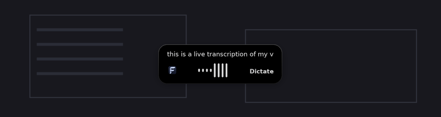
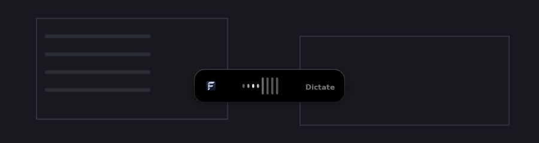
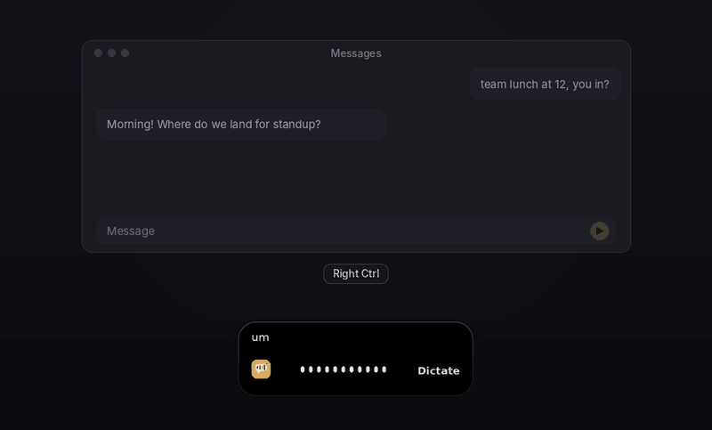
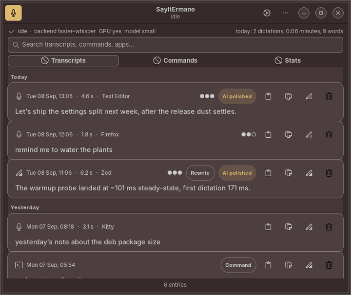
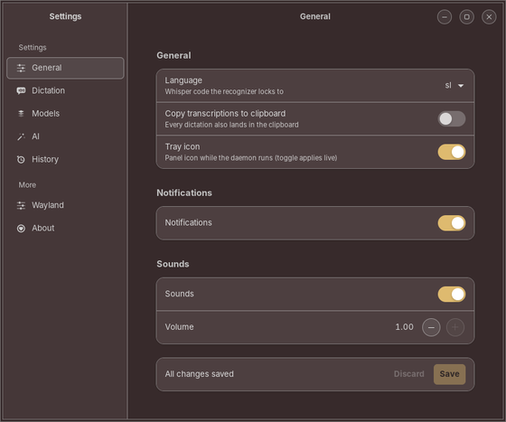
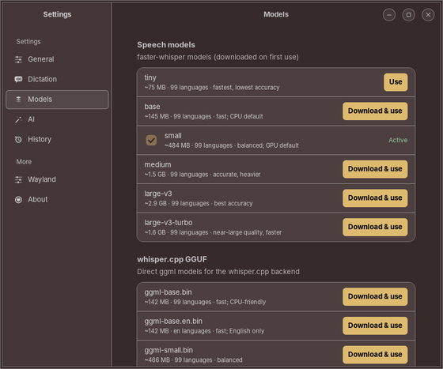
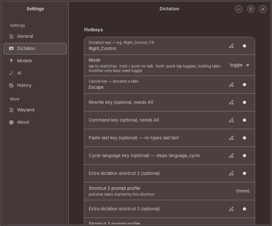

Types into any app
Text lands as typed keystrokes — clipboard-free — or as a verified paste: SayItErmano proves the target read the text, then restores your clipboard. Terminals, browsers, chat: all covered.
100% local dictation for Linux
SayItErmano turns your voice into polished text in any app — editors, browsers, terminals, chat. Speech-to-text runs entirely on your machine; an optional AI polish step cleans up the rest.
curl -fsSL https://raw.githubusercontent.com/acailic/SayItErmano/linux/scripts/install-one-shot.sh | bash
Unofficial, community-maintained Linux port of FluidVoice for macOS — not affiliated with or endorsed by altic-dev. GPLv3.

01 — what it does
Everything below ships today, in v0.8.2. No cloud account, no background uploads, no telemetry.
Text lands as typed keystrokes — clipboard-free — or as a verified paste: SayItErmano proves the target read the text, then restores your clipboard. Terminals, browsers, chat: all covered.
The full FluidVoice rule table — all 108 aliases. Say literal comma, literal new line, or example literal dot com and get exactly that.
The verbatim FluidVoice dictation prompt, sent to any OpenAI-compatible endpoint — Ollama, LM Studio, llama.cpp, Groq, OpenAI. Off unless you enable it.
“Um” and “uh” are stripped automatically; a custom dictionary fixes names and jargon — and repairs you make in History can become dictionary suggestions.
A dedicated hotkey turns voice into a terminal agent: proposals in a live panel, every command confirmed, destructive ones behind a two-press strong confirm.
GTK 4 / libadwaita windows for History and Settings — model downloads, hotkeys, languages, mic picker, per-app prompts — plus a tray icon, sounds and notifications.
02 — privacy
Whisper runs on your GPU when available, CPU otherwise. Nothing is uploaded, ever.
Upstream FluidVoice ships opt-in analytics. This port ships none, deliberately.
Cloud AI endpoints, if you use them, read their key from an environment variable. The tooling never writes it out.
The daemon exposes one user-owned Unix socket — no TCP port is opened under any configuration (a locked architecture decision).
It only runs against an endpoint you configure. If it fails — or the model refuses — the raw transcript is typed instead. Junk is never typed.
One caveat, stated plainly: if you point AI polish or the remote-STT backend at a cloud endpoint, that audio or text goes where you pointed it. Local by default; your choice, your endpoint — full details in STATUS.md ↗.
03 — the overlay
While you speak, the overlay streams the running transcript with a live waveform — so you know exactly what was heard before anything is typed.


04 — pipeline
Default Right Ctrl, toggle or hold — any key works. The pill overlay appears with a live waveform.
16 kHz mono capture through PipeWire, with watchdogs for muted mics and runaway takes. Streaming text appears as you talk.
faster-whisper on CUDA or CPU int8 — with whisper.cpp, torch and Parakeet TDT (ONNX) as alternative backends, and multi-language cycling.
Filler removal, your custom dictionary, and spoken punctuation — the full upstream rule table.
The verbatim FluidVoice prompt goes to any OpenAI-compatible endpoint you configure. Guardrails keep refusals and junk out of your document.
Typed keystrokes, or a paste that is verified against the target field and followed by clipboard restore. History keeps every take.
“um lets meet on tuesday around 3 no wait 4 p.m.”
“Let’s meet on Tuesday at 4 p.m.”
05 — install
User-space by default, no sudo unless a system package is missing. First use downloads a Whisper model (default small ≈ 484 MB).
App-launcher entry, login autostart, no terminal needed afterwards. Add -s -- --system for a system-wide install.
curl -fsSL https://raw.githubusercontent.com/acailic/SayItErmano/linux/scripts/install-one-shot.sh | bash
A pinned, reproducible build — honestly labeled 24.04 / x86_64 / Python 3.12 only.
curl -LO https://github.com/acailic/SayItErmano/releases/download/v0.8.2/sayit-ermano_0.8.2-1_amd64.deb
sudo apt install ./sayit-ermano_0.8.2-1_amd64.deb
Clone and run the installer script — it provisions the venv and system tools (reuses your CUDA torch if present).
git clone https://github.com/acailic/SayItErmano.git -b linux && cd SayItErmano && ./scripts/install.sh
Isolated under ~/.local, never touches system Python. Upgrades are one command (sayit-ermano update).
pipx install git+https://github.com/acailic/SayItErmano.git@linux
Arch users: a native AUR recipe (sayit-ermano) lives in-tree — its first push is pending, so until it lands use pipx or source. The install guide keeps the current state.
06 — the native app
History and Settings follow your system theme and mirror the macOS app’s layout — the Settings sidebar even keeps the Mac’s section order.




07 — questions
Yes — in the default configuration. Transcription runs on your hardware, insertion is keystroke-based, and there is no telemetry. The two opt-in exceptions are AI polish and a remote STT backend: both are inert until you configure an endpoint, and both go exactly where you point them.
Linux with Python 3.11+, PipeWire, and a few small tools (xdotool, xclip, libnotify-bin). A Whisper model — the default small is ≈ 484 MB — downloads on first use. A CUDA GPU is welcome but optional; CPU int8 works fine.
Yes, additively: a session probe detects Wayland and the doctor tells you exactly which capabilities need which tools. Typing works via wtype or ydotool, hotkeys bind through your desktop environment, and there is an optional evdev push-to-talk path. Some X11 niceties (the pill overlay, full paste verification) degrade gracefully — see the Wayland guide ↗.
faster-whisper (CUDA / CPU int8) is the default; whisper.cpp (GGUF, with in-app downloads), OpenAI Whisper on torch, NVIDIA Parakeet TDT via ONNX, and any OpenAI-compatible remote STT endpoint are also supported. You can switch models with one click, cycle languages at runtime, and set per-model language overrides.
SayItErmano is an unofficial, community-maintained Linux port of FluidVoice, the open-source macOS dictation app. It is not built by, affiliated with, or endorsed by the FluidVoice authors. The GPLv3-licensed prompts, rules and sounds were ported where the license allows — the behavior spec documents every match with file:line evidence.
macOS is upstream’s home — use FluidVoice there. This port is Linux-only, a locked decision: X11 and Wayland are the only targets it will ever claim. The comparison doc maps the wider dictation landscape.
Nothing — GPLv3, free as in freedom and in beer. If you enable cloud AI polish, you pay your provider for those tokens; with a local model (Ollama, LM Studio, llama.cpp) even that is free.
08 — roadmap
The roadmap is public, prioritized, and nothing on this page claims more than ships. A taste of what’s next:
Running the full live-session matrices that gate Wayland parity claims and the focused-field context default.
Speaker labels only if an offline adapter passes the accuracy/redistribution benchmark; true streaming once a real adapter exists.
A system/light overlay theme, a wlroots layer-shell preview pill, a native Nix flake, clean-chroot AUR verification.
An AT-SPI insertion route as a fallback ladder rung, and drag-to-reorder for the mic priority list.
One command. One keypress. Your words, polished, anywhere.
curl -fsSL https://raw.githubusercontent.com/acailic/SayItErmano/linux/scripts/install-one-shot.sh | bash